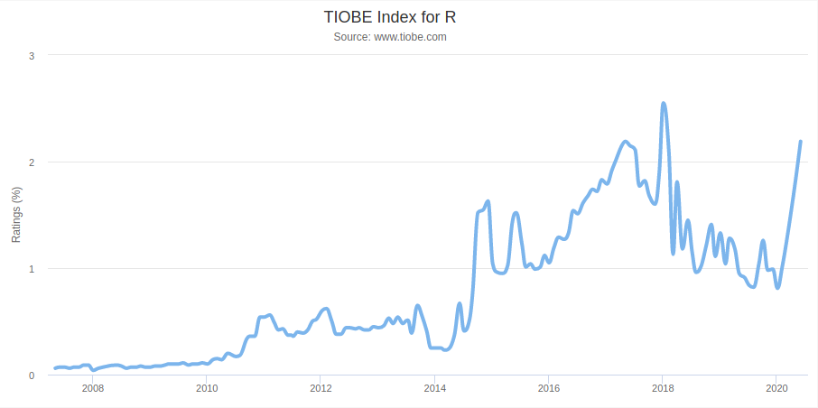
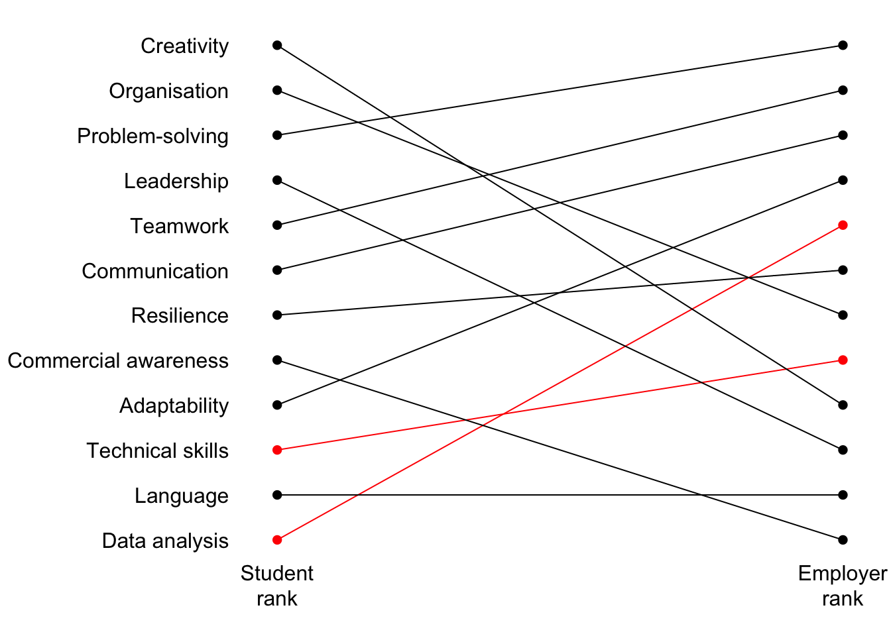
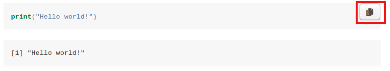
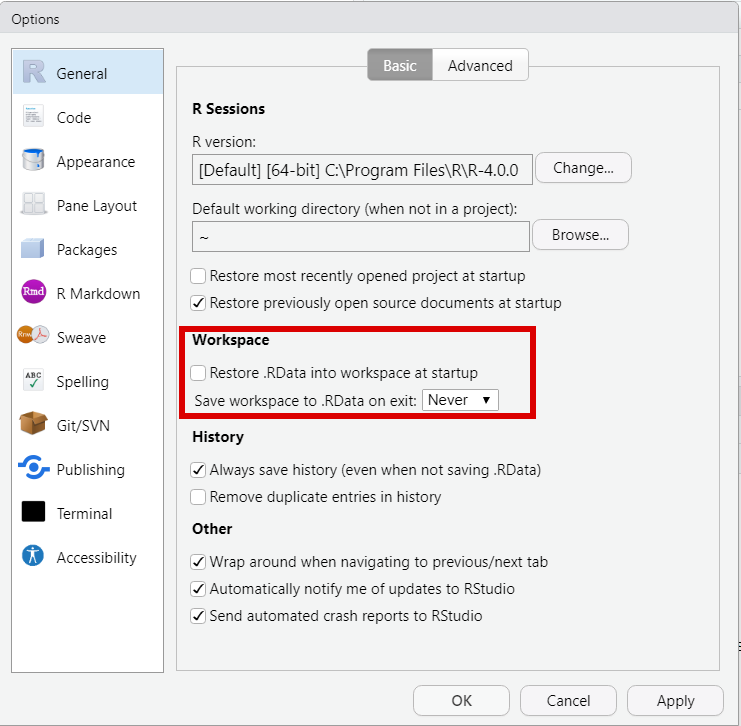
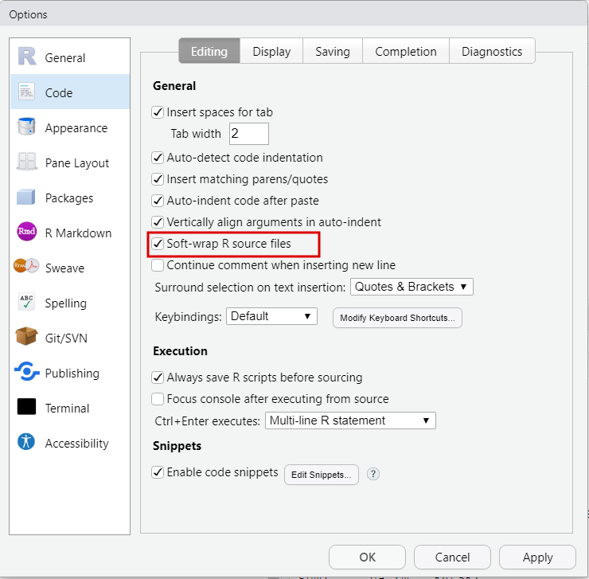
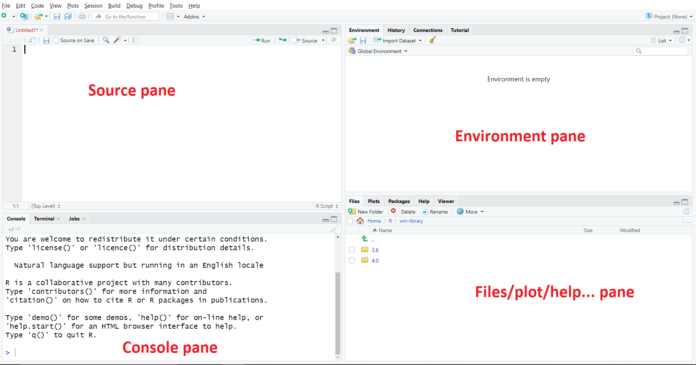
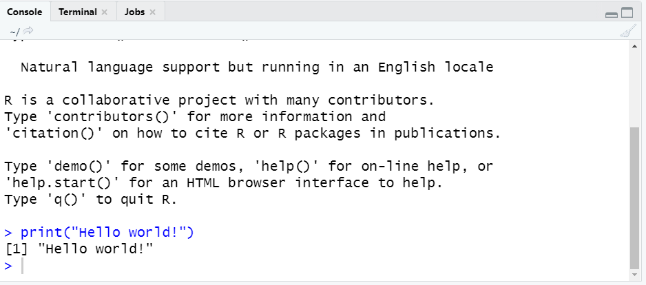
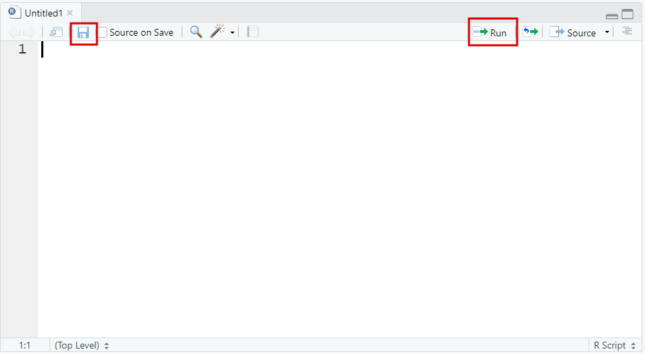
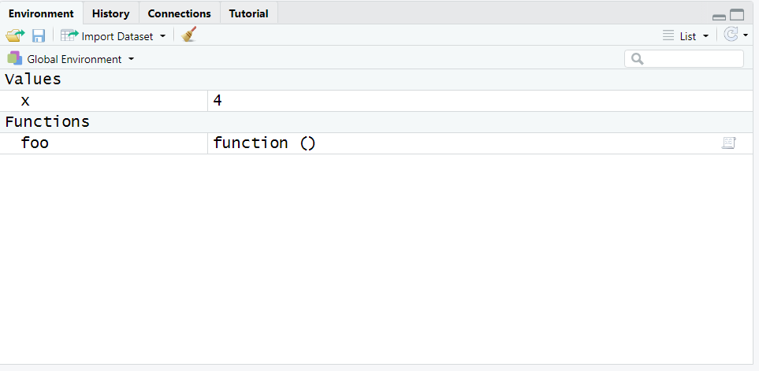

1.1 Content
This section provides a basic overview of the R programming language and instructions on how to set up R and RStudio on your computer.
What is R and why should I learn it?
R is an open-source statistical programming language used for data processing, analysis and visualization. It was released in 1993 by University of Auckland and is based on the older S programming language. Since then, it has grown to be one of the most popular languages for quantitative data analysis across multiple disciplines.
There are many reasons why learning R is worth your time:
1. It’s open-source - as opposed to other popular statistical packages such as SPSS, Stata or SAS, R is an open-source tool. This means that using R and all its public libraries is completely free of charge and requires no special licences. It is maintained by the user community, and thus all the improvements directly coincide with the requirements of the end-users, rather than profit-driven considerations often guiding the introduction of new functionalities to proprietary statistical packages.
2. It can be widely applied - since it’s developed by users, there are tools in R for doing almost everything, from simple data manipulation and visualization to automated web data collection, natural language processing, survey data analysis, epidemiology, computational biology, social network analysis, cognitive modelling, geospatial analysis, deep learning and many more.

3. It is widely applied - in 2019, R was the 5th most popular tool for data science mentioned by job advertisements on indeed.com. It is widely used in a variety of industries, including tech, consulting, think-tanks and public institutions.
4. It has an abundance of resources available on-line - due to its increase in popularity in recent years, there are multiple R courses available on-line, which help you master the usage of particular techniques and libraries through practical exercises. The considerable size of the community that emerged surrounding the language throughout the recent decades means that almost all of the problems you will face on different levels of advancement in R programming are likely to have been encountered by others in the past. As a result, Google is a tremendous resource for troubleshooting, debugging and deepening your understanding of the ins and outs of R programming. Examples of useful MOOC course websites include DataCamp, Coursera and Edex.
5. It is a programming language for analysing data. While this may sound like a cliché, the ubiquity of data is transforming almost every area of life nowadays. Therefore data literacy and understanding of key programming concepts are extremely useful in itself, as you never know when you may need these in the future. Majority of the concepts covered in this course are to a large extent transferable to other commonly used languages and data analysis tools. Having a high level of technical and data analysis skills is one of the most desirable skills according to employers - a fact which is largely overlooked by many prospective job seekers:

The course structure
This course is divided into four parts. The first one will introduce you to R, covering the basic concepts related to different data structures, simple tools for analysis and core programming concepts. The second part extends this to the application of specialist R libraries used for data manipulation and visualization. Part 3 covers key statistical analysis techniques, such as correlation and linear regression and discusses how they can be applied in R. Finally, part 4 is devoted to advanced topics.
Each chapter consists of the content part, discussing new R tools and techniques with examples, followed by a summary, which includes the list of the functions used in the chapter along with short explanations and finally a set of practical _exrcises with solutions. All the material presented in the chapter - the R Script, the Markdown file, the exercises and the data - are available to be downloaded at the top of each chapter page. Throughout each chapter’s content, R code is always presented in “chunks” followed by the output they produce, as you can see in the image below. Note that you can always use the button in the top right corner to copy the content of the chunk into the clipboard and paste into your R session.

In the remainder of this chapter, we will go through the process of setting up all the necessary tools on your personal computer.
Setup
To get started with R, you’ll need to download two things: the R language and the R Studio IDE (Integrated Development Environment). You can get the first one from CRAN by following the appropriate installation link for your operating system at the top of the page. Once you install R, go to RStudio website and download and install R Studio.

Now that you are done with the installation, you are ready to start using R - you can do that by clicking the RStudio shortcut. After opening the application, there are a couple of things that are useful to set up. First, open the “Tools” tab at the top of the window and select “Global Options”. There, under the “General tab” uncheck “restore .RData into workspace at startup” and set “Save workspace to .RData on exit” to “Never”. This is to ensure your R session always starts clean, without the objects loaded from the previous time you have used it. Then, in the “Code” section, check the option “Soft-wrap R Source file”. Finally in the “Appearance” section select editor theme of choice, as well as the appropriate font size and zoom. Click Apply and then OK once all this is done.
 
Layout
The R Studio editor consists of R main panes - the “Source”, “Console”, “Environment/History/…”, and “Files/Plots/Packages/…”. You can adjust their location and hide them under the pane button, located on the right side of the navigation bar.

Console pane

The console is where all the output generated by R (except for plots) goes. You can also enter R Studio function calls in there to produce output. Give it a try and type print("Hello world!") into the command line.
You can also try entering simple mathematical calculations such as 2+2 and see that R works perfectly as a calculator. Note that you should rarely enter longer pieces of code into the console. To ensure reproducibility of your work, the code should always be executed from saved R Scripts.
Source pane

The source pane contains the R Scripts - these are essentially text files in which you save longer pieces of R code that you can execute sequentially. You can open a new R-Script by clicking on the icon in the top left corner or by pressing Ctrl + Shift + N in Windows (or Command + Shift + N in Macbooks). You can then save the R script by clicking the floppy disk icon at the top of your R script or by pressing Ctrl + S (Command + S). Please save your file and name it hello.R. Make sure to create a separate folder such as r_course in which you will store all the files related to the lessons. You can then type the same print("Hello world!") function call as you did into the console and execute it by selecting the line and pressing Ctrl + Enter (Command + Enter) or pressing the small icon at the top right corner. Generally, you can execute longer pieces of code by first selecting the entire chunk using your cursor and then pressing the appropriate execution keyboard shortcut or clicking on the execution button. You can also comment on your code by using the # hashtag. Everything following # will not be interpreted by R as code, therefore you can write anything you want after it until you begin a new line by pressing Enter. Generally, it’s crucial to comment your code, as when you come back to some of your scripts in half a year, you are likely to not remember why and how you did everything. So rather than keeping print("Hello world!") in your first R script, type:
A short note on reproducibility
It is vital that all the essential code that you work on both during this course and in all future cases of R usage is stored in R scripts rather than executed directly from the console. An ideal R project would consist of the file containing the data you have used in the format it was collected (in case of primary data) or provided (in case of secondary data) and an R script(s) used for the analysis with appropriate comments made at each step, including data preprocessing, visualization and any statistical analyses you run as part of the project. This way, anyone who wants to reproduce your analysis (including yourself in a year) can simply open the script, “press play” and get the same results again, as well as trace back all the steps and decisions you made to arrive at these results. This is crucial in academia, as it allows your supervisor/reviewer to ensure methodological correctness of your work, which is an important step in tackling the replication crisis haunting many academic disciplines. It is also very important in a business setting, as it allows your co-workers to understand your work, find possible errors in it or re-use it when necessary, rather than looking at it as a black box producing an output of potentially questionable quality.
Essential code here refers to anything needed to reproduce your analysis. Some examples of non-essential operations you may still execute from your console include getting an overview of the data (for example printing the variable names, number of records, variable types or producing a simple plot that you are not going to include in your final work) as well as looking at function documentation described below. However, for this course, it’s recommended that you keep all the code you use in your R scripts. This will allow you to come back to each lesson and review all the tools that you have learned throughout the course. Every section will provide you with an R script with all the code that it uses in order at the top of the page. It will also include the R markdown file (.Rmd) with the same content. Rmarkdown is a special format used to produce documents in formats such as HTML, pdf or Docx mixing text and R code - you will learn about it in the R Markdown section at the end of this course.
Environment pane
The third tab provides a list of R Environments. While an important idea in R, they are irrelevant for this course. For more advanced readers, Hadley Wickham’s Advanced R provides a good overview of the concept. During this course, you will only work with R’s Global Environment. This is where all the objects you assign in R will be stored and displayed. For example, before you have printed the output of 2 + 2 to the R console. However, you can also store the same output in an object of (almost) arbitrary name, say x, using the <- assignment operator. The output that would normally be stored in the console will instead be passed into the object on its left. You can then type x in your script and execute it or type x into the console and press enter to see the value stored in x, as seen below.
Note that x appeared in the environment pane under the Values section. Similarly, we can create a function, by typing:

Again, function foo will appear in your environment with an appropriate label. You will learn more about assignment and functions in R Programming Basics and Key Programming Concepts. Here, the most important takeout point is that the “Environment” tab allows you to see all the objects you have defined in R, along with some of their key properties.
A short note on keeping your working environment clean
While working on an R project, it’s important to always start with a clean environment. Especially when you start receiving an error that you cannot trace back easily, the best first step is often to clean your run session and run your script run by line carefully examining the output. To clean the working environment, you should simply restart your R Studio session, either by selecting the “Restart R” option from the “Session” tab at the top of the window or by pressing Ctrl + Shift + F10 (Command + Shift + F10). Note that this will cause you to lose everything that is stored in your environment. This is yet another reason to put all your code in a script - as a result, even when you restart the session, you should be able to reproduce everything that was previously present in your Global Environment.
Files/plot/help … pane
The last pane contains a file browser, a plot viewer and documentation. You will learn more about plotting data in the chapters on Exploratory analysis and Data visualization. More importantly, this section is also where you can view the help coming from R documentation. Every function in R has an offline documentation file associated with it that you can access while using R Studio. To do it simply type help(functionname) or a question mark ? followed by the function name. Give it a try by typing ?sum into the R console and pressing enter - you should be able to see the help for the sum function. The documentation is extremely useful when working with R. While its content may seem a bit technical at first, as you learn more about R, a lot of things should become clearer, making it easier to learn and understand new functionalities. Furthermore, it usually provides reproducible examples of R function’s usage (you need to scroll to the very bottom of the documentation to find it), which allow you to understand in what context and how can the function be used. For example, in the sum function documentation, we can see:
Give it a try in your hello.R R script - you should see the sum function behaving exactly as expected.
A short note on finding help when working with R
While the built-in documentation is useful, sometimes you may run into trouble that’s difficult to work out on your own. The simplest solution is to concisely describe your problem (or copy the error message you are receiving) and Google it. Usually, the first result that will show will come from StackOverflow. StackOverflow is a Q & A website focused on programming in all languages, and has an extensive section solely on R (almost 350 000 questions at the time of this course creation). For example, you can try typing "a" + 5 into the console. The resulting error message Error in "a" + 5 : non-numeric argument to binary operator is rather complicated, and might put many first-time users off. However, a quick Google search will lead you to this Stack Overflow post, which explains that A binary operation is a calculation that takes two values (operands) and produces another value (…) When you see that error message, it means that you are (or the function you’re calling is) trying to perform a binary operation with something that isn’t a number. Note that it’s good to make sure that your question has not been answered previously (which is the case 99 out of 100 times) before posting a new one. Should you decide to post your question, make sure to follow Stack Overflow guidelines, as well as to make your example reproducible, as described in this post.